WHATSENDER is a FREE software designed to send bulk Whatsapp messages directly from PC in a simple and effective way.
WhatSender uses Whatsapp Web technology but adds useful features to do Whatsapp Marketing and send Whatsapp messages to multiple users at the same time. Here are the reasons why you should use Whatsender to contact all your friends / relatives or potential customers to do Whatsapp marketing at a professional level:
- Create and send customized messages (with the name of the recipient or other “variables”) directly from your PC
- Import contacts either manually or from file (CSV or TXT)
- Send Whatsapp messages to contacts even if they are not saved in your address book
- Multi Account (Multi Channel) to automatically send messages from different whatsapp accounts
- Automatically create multiple variations of the message to send to all contacts and avoid spam or ban
- Ability to see the report of the campaign (from LOG section)
- Possibility to schedule the sending and set a delay between the messages to avoid to be banned (read also this tips)
- Grab all member of a Whatsapp group to contact them via WhatSender
- Create and send Whatsapp messages with viral photos and videos
- Bulk check of Whatsapp and non-Whatsapp phone numbers (numbers filter feature)
NOTE: The FREE version of WhatSender allows you to send unlimited messages. The only limitation is the inability to import contacts from files or to copy and paste them in batch mode.
This tool allows you to communicate with recipients that expect receive your messages (Eg. Cliients , students , patients , etc..), and it’s not a spam tool, so we are not responsible if you got banned
Immediately after installation you will see the following main screen:
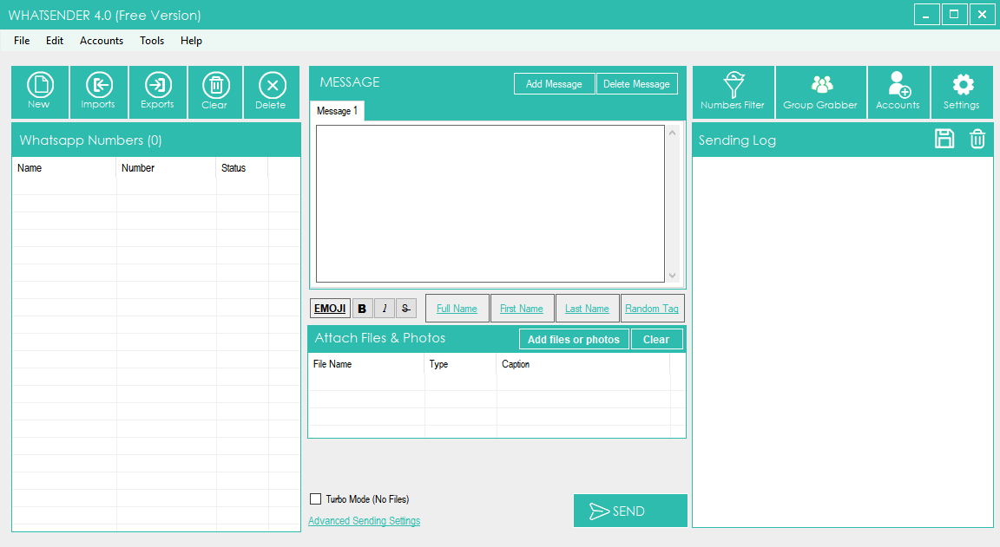
Select the desired language (arabic, english, espanola, francais, porugues, italian) clicking on TOOLS menu and then LANGUAGE, as shown in the image below:
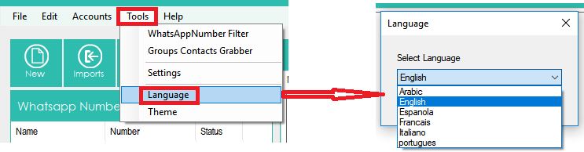
GUIDE
HOW TO SEND BULK WHATSAPP MESSAGES FROM PC
STEP 1. Import or add your contacts
Click on the upper left on IMPORT to import ALL your contacts (recipients of the message you want to send). You have two way to add your contacts (import from file or manual import)
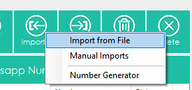
If you click “Import from file” it will open a new window where you can select and import contacts from CSV or TXT file. In these files you can have a column with the phone number or two column with name and number (eg. Name, number). You can also have more columnes with name, number and other variables.
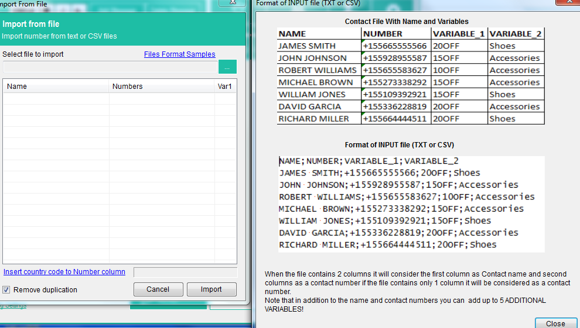
If you import contacts with name, numbers and variables you will be able to create custom messages with “parts of the message” taken automatically from the imported file.
If you want import a file with multiple variables, this is an example of the format of the txt or csv file to use:
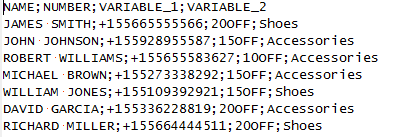
As you can see, all fields must be separated by “;”
If you click on Manual Import it will open a window where you can add manually your contacts and enter name and mobile number (or mobile numbers only).
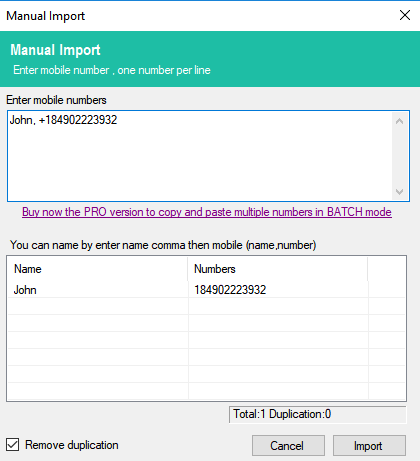
Note: In the FREE version you will be allowed to import contacts manually only and the “copy and paste” option is disabled. With the maual import you are also not allowed to add multiple variables (you can add name and numbers, or numbers only).
Once you add contacts click on IMPORT.
STEP 2. Create the Message to send
Now you can start typing the message to send to your contacts (from the central section of the program).
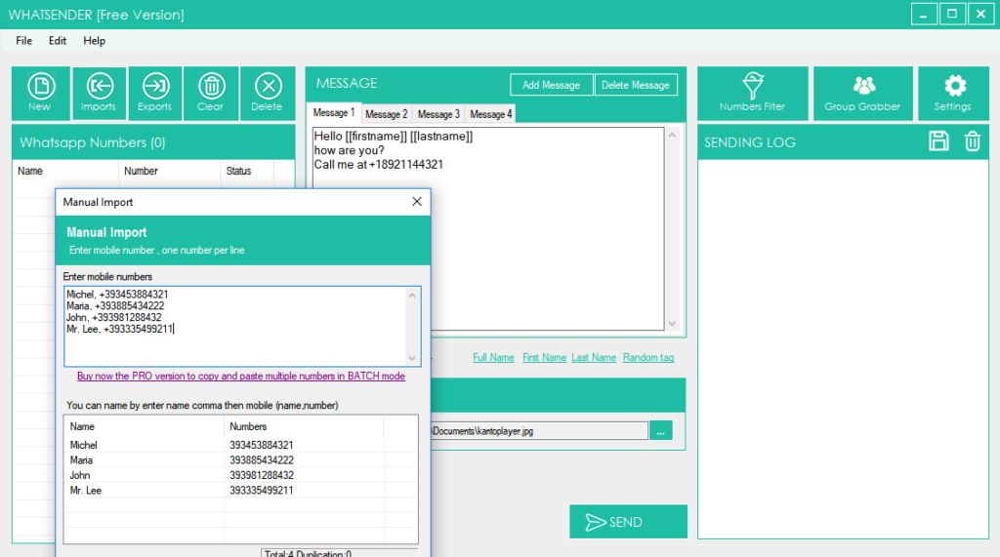
You will be able to create also different “variants” of the message so that your contacts do not receive the same text (this avoids spam and avoids being banned on Whatsapp). Just click on “Add Message” button to create a new version for the message.
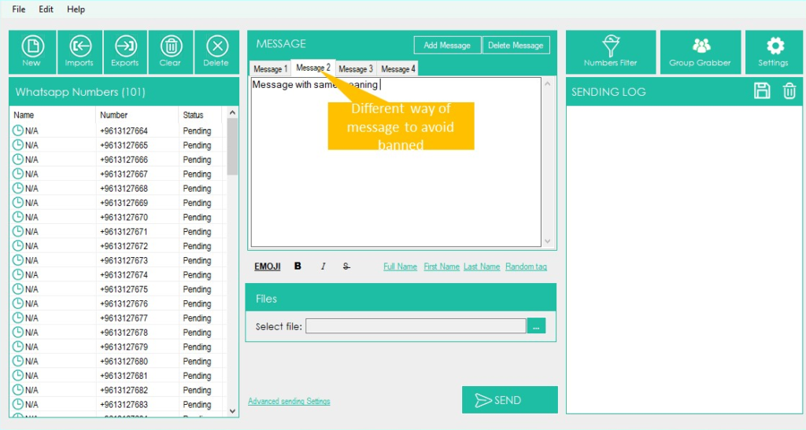
Over the message window there is a link to add Emoji and there are links to automatically add the name and other “variables” on the message.
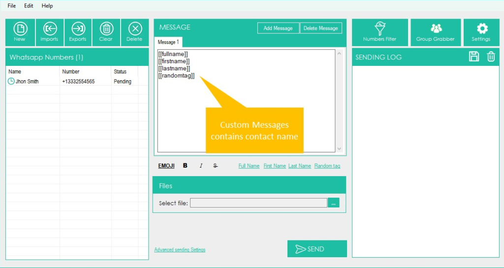
There is also a “SpinTax” link: it will allow you to set an array of words with the same meaning or synonyms (e.g Hello, Hi, Hey) and when you send the message, the program randomly will use them. In this way you automatically will send different messages and you will reduce the risk of “ban”.
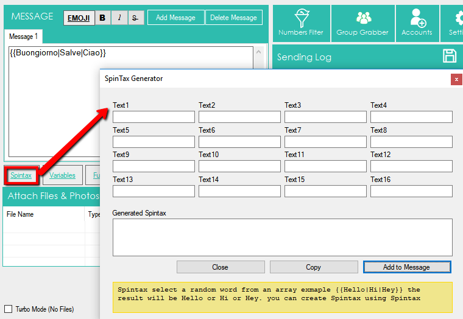
You can also select a file to attach (photo, images, documents or video file) and send with the message.
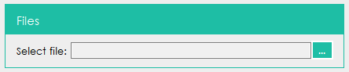
STEP 3. Send the message
When all contacts are loaded and the message is ready, just click on SEND button below.
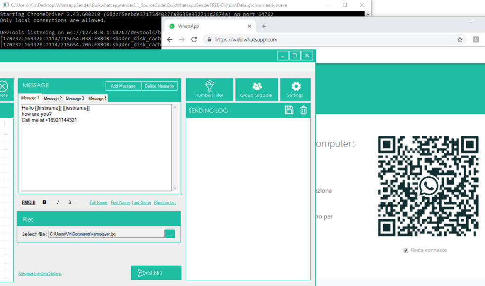
After clicking on SEND button, it will open this window:
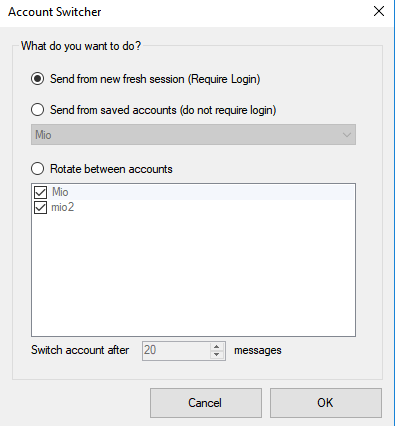
You can send from new fresh session (after login) or send from a saved whatsapp account (do not require login). You can also send messages from multiple whatsapp account in “rotation” (e.g 20 messages per account). To add all your whatsapp account you just need to click on ACCOUNTS on the top menu bar (this feature is available in PRO version only!)
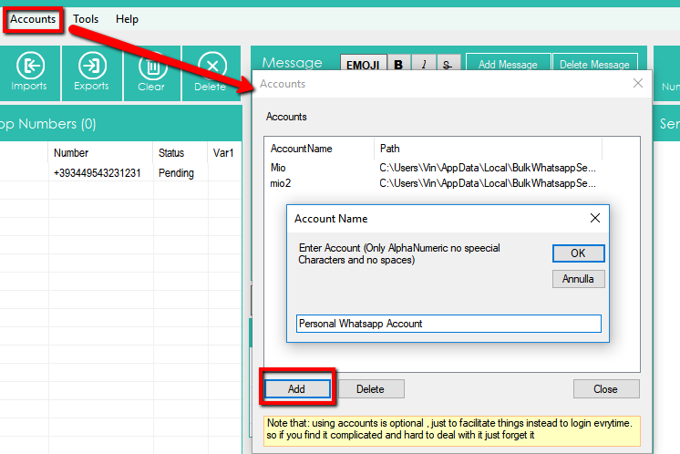
If you choose to send from “new fresh session“, WhatSender automatically will open web.whatsapp.com on Google Chrome and you will see a QR code. Scan this QR code with the scanner within WhatsApp. To do so, open WhatsApp on your phone and:
> On Android: in the Chats screen > Menu > WhatsApp Web.
> On iPhone: go to Settings > WhatsApp Web.
> On Windows Phone: go to Menu > WhatsApp Web
So, scan the QR Code on your computer screen from your phone. Soon after, the Whatsapp message will be sent to all recipients!
Other Features/Settings
WhatSender has a very simple and intuitive user interface where all the tools are at your fingertips:
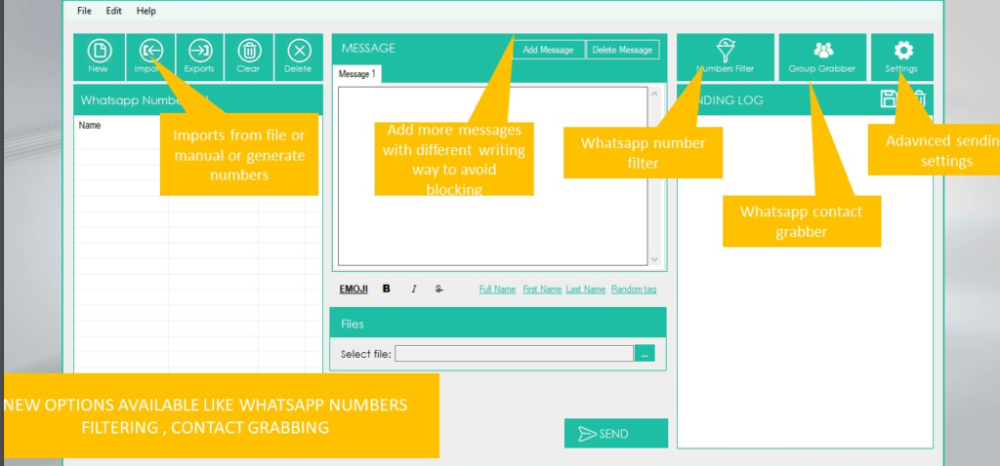
In addition to the basic functions already analyzed such as importing contacts and creating a personalized message, there are other interesting advanced features and settings in the program.
GENERATE NUMBERS: If you click on Imports –> Generate Numbers you will be able to create mobile numbers to try to reach. You will have to set a “start number” and a “count“: the program will generate all numbers as you can see from image below.
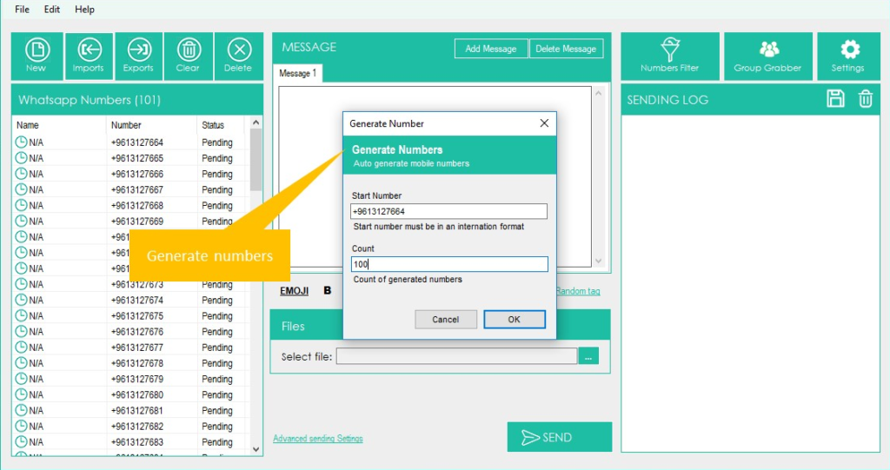
CONTACT GRABBER: this feature will allow you to grab all contacts from a selected whatsapp group. Just Open Whatsapp, scan the QR code from your phone, select the group and WhatSender will extract all contacts. All contacts will be listed on the “contact grabber” window as you can see from image below.
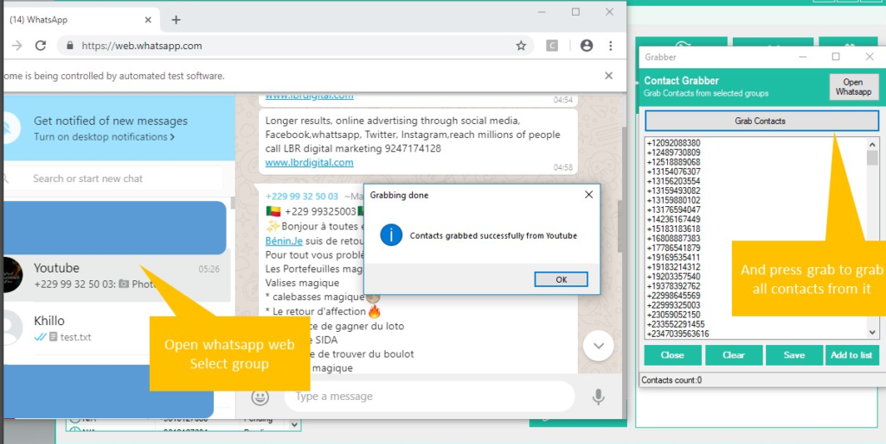
SETTINGS: If you click on “Advanced sending Settings” on “Settings” button it will open a windows where you will find advanced send option that initiate dialog after “x” amount of messages to avoid blocking. You just have to set your familiar Whatsapp accounts and some message dictionary (random message that will be sent to your familiar accounts).
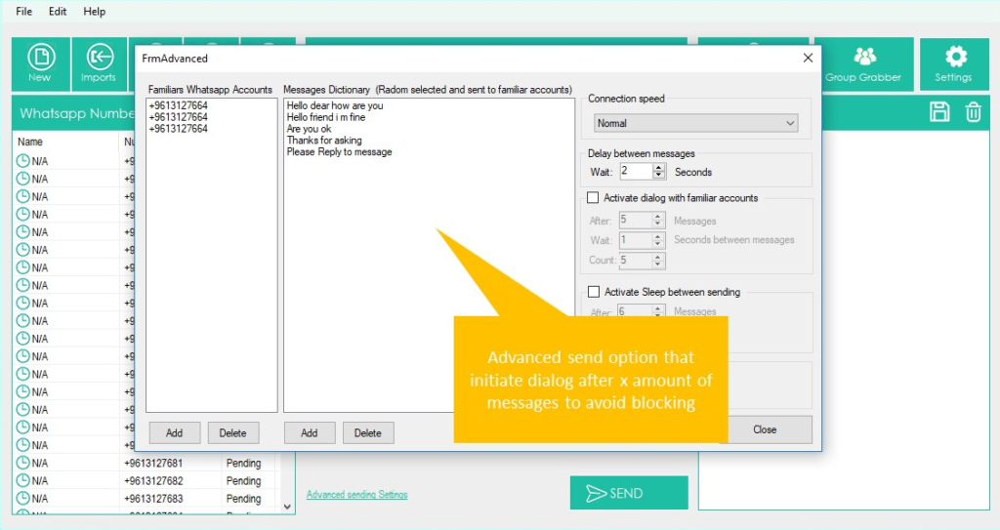
NUMBERS FILTER: this feature will allow you to know, given a list of phone numbers, those that are associated with a Whatsapp account and those that are not Whatsapp. Once the function is open, you must load all phone numbers (or use the number generation function) and then click on START FILTERING

The software will check all numbers to know that are “Whatsapp” and “NonWhatsapp” accounts.
VIDEO TUTORIAL
#4. Other Tips
If you are using WhatSender to send a lot of messages and you want to protect your whatsapp account we give the following advices:
7. Use SpinTax feature to to set an array of words with the same meaning (the program randomly will use them)